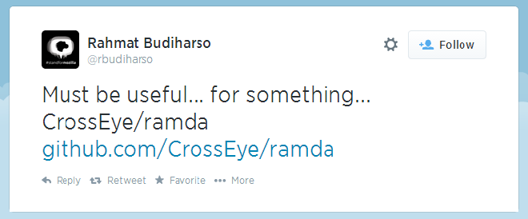

译者注：本文翻译自 Scott Sauyet 的 《Why Ramda》，转载请与原作者或本人联系。下面开始正文。
当 buzzdecafe 最近将 Ramda 介绍给 大家时，出现了两种截然相反的反应。那些熟悉函数式技术（在 JavaScript 或其他语言中）的人大部分的反应是：“Cool”。他们可能对此非常兴奋，也可能觉得只是另一个有潜力的工具而已，但他们都知道它的作用和目的。
另一部分人的反应是：“Huh?”

对于那些不熟悉函数式编程的人来说，Ramda 似乎没有什么帮助。Ramda 中的大部分功能在类似于 Underscore 和 Lodash 库中都已经有了。
这些人是对的。如果你希望一直使用之前一直在用的命令式和面向对象的方式进行编程，那么 Ramda 可能没有太多价值。
然而，它提供了一种不同的编码风格，这种编程风格天然适合于函数式编程语言：Ramda 可以让 “通过函数式组合构建复杂的逻辑” 变得更简单。注意，任何包含 compose 函数的库都可以进行函数式组合；这样做真正的意义是：“make it simple(让编程变得简单)”。
来看看 Ramda 是如何工作的。
“TODO lists” (待办事项列表) 似乎是用于比较 Web 框架的 “标准样例”，所以我们也借用它来进行演示。假设需要一个能够删除所有已完成项的 “TODO list”。
使用内置的 Array 原型方法，我们可能会这样写：
1 | // Plain JS |
使用 LoDash，似乎变得简单一些：
1 | // Lo-Dash |
通过上述任一方法，我们都可以得到一个过滤的任务列表。
在 Ramda 中，我们可以这样做：
1 | var incomplete = R.filter(R.where({complete: false}); |
(更新：where 函数被拆分成两部分：where 和 whereEq，该段代码可能不会像现在这样工作了)。
注意到有什么不同了吗？这里没有提到任务列表。Ramda 代码只给我们函数（没有给数据参数）。
这就是重点所在。
现在我们有了一个函数，可以很容易与其他函数组合，来处理任意我们选择的数据。假设现在有一个函数：groupByUser，可以通过用户对待办事项进行分类。我们可以简单地创建一个新函数：
1 | var activeByUser = R.compose(groupByUser, incomplete); |
用来选择未完成的任务，并对其按用户分类。
如果给它提供数据，这就是一个函数调用。如果不借助 compose 手写出来，可能看起来会像这样：
1 | // (if created by hand) |
“不必手动一步一步地去做” 是组合的关键所在。并且组合是函数式编程的一项关键技术。让我们看看，如果再进一步的话会发生什么。如果需要使用到期日期来对这些用户的待办事项进行排序，该怎么办呢？
1 | var sortUserTasks = R.compose(R.map(R.sortBy(R.prop("dueDate"))), activeByUser); |
一步到位？
善于观察的读者可能已经注意到了，我们可以组合上述所有需求。由于 compose 函数可以接受多个参数，为什么不一次完成上面所有的功能呢？
1 | var sortUserTasks = R.compose( |
我的答案是：如果中间函数 activeByUser 和 incomplete 没有其他的调用，上述方案可能更合理一些。但是这可能会使调试变得更麻烦，而且对代码的可读性也并没有什么帮助。
事实上，可以换个思路。我们在内部使用可重用的复杂模块，这样做可能会更好些：
1 | var sortByDate = R.sortBy(R.prop('dueDate')); |
现在可以用 sortByDate 对任何任务列表，通过到期日期进行排序。（事实上，可以更灵活，它可以对任何符合下面条件的数组进行排序：数组元素为包含可排序的 “dueDate” 属性的对象。
但是，等等，如果想要按日期降序排列呢？
1 | var sortByDateDescend = R.compose(R.reverse, sortByDate); |
如果确定只需要按日期降序排列，可以将所有这些操作都在 sortByDateDescend 中进行组合。如果不确定会升序还是降序排列，我个人会将升序和降序方法都保留。
数据在哪里？
我们 仍然 没有任何数据。这是怎么回事？没有数据的 “数据处理” 是…什么呢？是 “处理”。接下来恐怕需要你多一些耐心了。当进行函数式编程时，所有能获得只是组成 pipeline （管道）的函数。一个函数将数据提供给下一个，下一个函数将数据提供给下下个，依次类推，直到所需的结果从 pipeline 末端输出。
到目前为止，我们已经创建的函数如下：
1 | incomplete: [Task] -> [Task] |
虽然我们使用了之前的函数来构建 sortUserTasks ，但它们单独可能都是有用的。我们可能掩盖了一些东西。我只是让你想象有一个构建 activeByUser 的函数 byUser，但并没有真正看到过它。那么我们如何构建这个函数呢？
下面是一种方法：
1 | var groupByUser = R.partition(R.prop('username')); |
partition 使用了 Ramda 中的 reduce（与 Array.prototype.reduce 类似）。它也被叫做 foldl，一个在许多其他函数式语言中使用的名称。我们不会在这里做过多讨论。你可以在 网上 获得所有关于 reduce 的信息。partition 只是使用 reduce 将一个列表分成具有相同键值的子列表，子列表通过函数来确定，本例中为 prop('username')，它只是简单地从每个数组元素中取出 “username” 属性。
（所以，我是否使用 “闪亮” 的新函数来分散了你的注意力？我在这里仍然没有提到数据！对不住了，看！一大波 “闪亮” 的新函数又来了！）
但等等，还有更多（函数）
如果我们愿意，可以继续这样下去。如果想从列表中选出前 5 个元素，可以使用 Ramda 的 take 函数。所以想要获取每个用户前 5 个任务，可以这样做：
1 | var topFiveUserTasks = R.compose(R.mapObj(R.take(5)), sortUserTasks); |
(会有人在这里想到 Brubeck 和 Desmond 吗)？
然后，可以将返回的对象压缩为属性的子集。比如标题和到期日期。用户名在这个数据结构里显然是多余的，我们也可能不想将过多不需要的属性传递给其他系统。
可以使用 Ramda 的 project 函数来模拟 SQL 的 select：
1 | var importantFields = R.project(['title', 'dueDate']); |
我们一路创建的一些函数，看起来可以在 TODO 应用的其他地方复用。其他的一些函数或许只是创建出来放在那里，以供将来组合使用。所以，如果现在回顾一下，我们可能会组合出下面的代码：
1 | var incomplete = R.filter(R.where({complete: false})); |
好吧，够了！我可以看一些数据吗？
好的，马上就可以了。
现在是时候将数据传给我们的函数了。但关键是，这些函数都接受相同类型的数据，一个包含 TODO 元素的数组。我们还没有具体描述这些元素的数据结构，但我们知道它至少必须包含下列属性：
- complete: Boolean
- dueDate: String, formatted YYYY-MM-DD
- title: String
- userName: String
所以，如果我们有一个任务数组，该如何使用呢？很简单：
1 | var results = topDataAllUsers(tasks); |
就这些吗？
所有已经编写的程序，就只有这些？
恐怕是这样。输出会是一个像下面这样的对象：
1 | { |
但这里有件有趣的事情。你可以将相同的任务初始列表传给 incomplete ，然后得到一个过滤过的列表：
1 | var incompleteTasks = incomplete(tasks); |
返回的内容可能是下面这样子：
1 | [ |
当然，你也可以将任务列表传给 sortByDate、sortByDateDescend、importantFields、byUser 或者 activeByUser。因为它们都处理相似的数据类型：一系列任务的列表。我们可以通过简单的组合创建出大量的工具。
新需求
在游戏的最后，你刚刚被告知需要添加一个新特性。你需要过滤出仅属于特定用户的任务，然后对该用户进行与之前相同的过滤、排序和提取子集操作。
这个逻辑当前嵌入到 topDataAllUser 里了…，或许我们组合的函数侵入太深。但也很容易重构。通常情况下，最难的是起一个好的名字。“gloss” 可能不太好，但已经是深夜了，这是我能想到最好的了：
1 | var gloss = R.compose(importantFields, R.take(5), sortByDateDescend); |
如果想使用它，可以像下面这样：
1 | var results = topData(byUser('Scott', tasks)); |
拜托，我只是想要我的数据！
“好的”，你说，“也许这很酷，但现在我真的只是想要我的数据，我不想要不知猴年马月才能返回给我数据的函数。我还能用 Ramda 吗？”
当然可以。
让我们回到第一个函数：
1 | var incomplete = R.filter(R.where({complete: false})); |
如何才能变成会返回数据的东西呢？非常简单：
1 | var incompleteTasks = R.filter(R.where({complete: false}), tasks); |
所有其他主要的函数也是这样：只需要在调用的最后面添加一个 tasks 参数，即可返回数据。
刚刚发生了什么？
这是 Ramda 的另一个重要特性。Ramda 所有主要的函数都是自动柯里化的。这意味着，如果你不提供给函数需要的所有参数，不想立即调用函数，我们会返会一个接受剩余参数的新函数。所以，filter 的定义既包含数组，也包含了过滤数组元素的 “predicate” 函数（判断函数）。在初始版本中，我们没有提供数组值，所以 filter 会返回一个新的接受数组为参数的函数。在第二个版本中，我们传入了数组，并与 “predicate” 函数一起来计算结果。
Ramda 函数的自动柯里化和 “函数优先，数据最后” 的 API 设计理念一起，使得 Ramda 能够非常简单地进行这种风格的函数式组合。
但 Ramda 中柯里化的实现细节是另一篇文章的事情（更新：该文章已经发布了：Favoring Curry）。同时，Hugh Jackson 的这篇文章也绝对值得一读：为什么柯里化有帮助。
但是，这些东西真能工作吗？
这是我们一直讨论的代码的 JSFiddle 示例：
这段优雅的代码清楚的表明了使用 Ramda 的好处。
使用 Ramda
Ramda 代码本身非常有用，上面提到的技术也非常有帮助。你可以从 Github 仓库 获取代码，或 通过 npm 安装 Ramda。
在 Node 中使用：
1 | npm install ramda |
在浏览器中使用，只需包含下列代码：
1 | <script src="path/to/yourCopyOf/ramda.js"></script> |
或者
1 | <script src="path/to/yourCopyOf/ramda.min.js"></script> |
我们会尽快将其放到 CDN 上。
如果你有任何建议，欢迎随时跟我们联系。